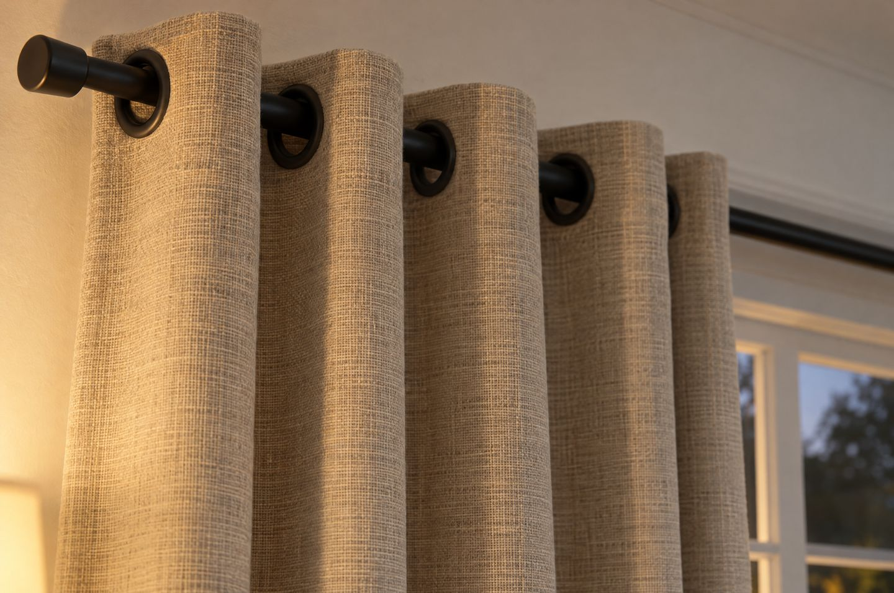

Vorhänge aufhängen: Länge, Breite und Höhe richtig planen
Hoch und breit gehängt wirken Fenster größer und der Raum ruhiger. Der Vorhang-Planer rechnet Stange, Stoffbreite und Länge für dein Fenster aus und zeichnet es dir auf.
Die Stange hängt etwa 15 cm über dem Fensterrahmen und ist links und rechts je 15 bis 20 cm breiter als das Fenster. Der Stoff ist bei Ösen und Schlaufen 1,5- bis 2-mal so breit wie die Stange, bei Kräuselband 2- bis 3-mal. Bodenlange Vorhänge enden 1 bis 2 cm über dem Boden. Steht unter dem Fenster ein Heizkörper, sollte der Vorhang beim Heizen oberhalb davon enden und ihn nicht verdecken.
Die wichtigsten Maße.
Vier Zahlen, mit denen fast jedes Fenster gut aussieht.
Der Vorhang-Planer.
Miss das Fenster mit Rahmen und den Abstand vom Boden zur Fensterbank. Der Planer zeigt, wo die Stange hin muss und wie viel Stoff du brauchst.
Dieselbe Rechnung steckt im Raum-Rechner, dort zusammen mit Teppich, Bildern und Lampen. Wie viel Licht ein Raum mit Vorhängen braucht, steht im Ratgeber Licht planen.
Welche Länge passt?
Die Länge entscheidet, wie der Vorhang wirkt, und ob er im Winter die Heizung ausbremst.
| Länge | Wirkt | Darauf achten |
|---|---|---|
| Schwebend, 1 bis 2 cm über dem Boden | Klar und ordentlich | Die übliche Wahl. Der Stoff schleift nicht und bleibt sauber. |
| Aufliegend, 2 bis 5 cm länger | Weich und gemütlich | Der Saum knickt leicht auf dem Boden. Schöner bei schweren Stoffen, staubt aber schneller ein. |
| Bis zur Fensterbank | Leicht, gut für kleine Räume | Etwa 1 cm über der Fensterbank enden lassen. Praktisch, wenn die Fensterbank als Ablage dient oder ein Heizkörper darunter steht. |
| Bodenlang an der Balkontür | Wie eine Wand aus Stoff | Der Vorhang darf die Tür nicht behindern. Hier hält er im Winter auch Zugluft ab. |
Leinen und Baumwolle laufen beim Waschen oft etwas ein. Solche Vorhänge lieber ein paar Zentimeter länger kaufen und nach der ersten Wäsche kürzen.

In sechs Schritten zum Vorhang.
Den Zweck klären
Soll der Vorhang verdunkeln, vor Blicken schützen oder nur Wärme und Weichheit in den Raum bringen? Ein dünner Store schützt tagsüber vor Blicken, ein dichter Vorhang macht abends dunkel. Beides zusammen geht mit einer Doppelstange oder einer Schiene mit zwei Läufen.
Richtig messen
Miss das Fenster mit Rahmen, dazu den Abstand vom Boden zur Fensterbank und die Raumhöhe. Die Länge des Vorhangs misst du später ab der Oberkante der Stange, bei Schienen ab ihrer Unterkante.
Hoch und breit hängen
Etwa 15 cm über dem Rahmen und je 15 bis 20 cm zu beiden Seiten. Dann deckt der offene Vorhang kaum Glas ab, es bleibt hell, und das Fenster wirkt größer. In niedrigen Räumen darf die Stange auch bis kurz unter die Decke wandern.
Genug Stoff nehmen
Ein Vorhang, der nur gerade so breit ist wie die Stange, hängt flach wie ein Laken. Bei Ösen und Schlaufen sollte der Stoff zusammen 1,5- bis 2-mal so breit sein wie die Stange, bei Kräuselband 2- bis 3-mal. Schwere Stoffe vertragen mehr Falten.
Die Heizung freilassen
Ein Vorhang über dem Heizkörper staut die Wärme, und das Thermostat misst falsch. Steht die Heizung unter dem Fenster, enden Vorhänge besser oberhalb davon oder bleiben beim Heizen seitlich offen.
Abends zuziehen
Im Winter nachts Rollläden schließen und Vorhänge zuziehen. Das mindert den Wärmeverlust am Fenster, besonders bei großen und älteren Fenstern.
Vorhänge zur Miete und ohne Bohren.
Nicht jede Wand verträgt Dübel, und nicht jeder Vermieter mag Löcher im Fensterrahmen.
- Klemmstange: Sie spannt sich zwischen zwei Wände oder in die Fensterlaibung. Gut für Nischen und Dachfenster, nicht für schwere Vorhänge auf großer Breite.
- Klemmträger: Sie werden auf den Flügel des Fensters gesteckt und tragen leichte Stangen oder Rollos direkt am Fenster.
- Deckenschiene: Wirkt besonders hoch und ruhig. Gebohrt wird in die Decke, das lässt sich beim Auszug meist leicht spachteln. Was in Mietwohnungen erlaubt ist, steht im Ratgeber Wohnen zur Miete.
- Vorhandene Haken nutzen: Hängen schon Träger an der Wand, lohnt oft eine längere Stange auf denselben Trägern statt neuer Löcher.
Checkliste vor dem Kauf.
Hak ab, was erledigt ist. Der Stand bleibt nur in deinem Browser.
Für dein Fenster.
Ideen zum Stöbern. Die Links führen zu einer Suche bei AmazonAnzeige
Lieber direkt beim Händler stöbern? Vorhänge bei OTTOAnzeige
Häufige Fragen.
Wie hoch hängt man eine Gardinenstange?
Etwa 15 cm über dem Fensterrahmen und mindestens 5 cm unter der Decke. Höher gehängt wirkt das Fenster größer und der Raum höher.
Wie viel breiter als das Fenster sollte die Gardinenstange sein?
Links und rechts je 15 bis 20 cm. Dann liegt der offene Vorhang neben dem Glas und nimmt kaum Licht weg.
Wie breit muss ein Vorhang sein?
Bei Ösen und Schlaufen 1,5- bis 2-mal so breit wie die Stange, bei Kräuselband 2- bis 3-mal. Bei einer Stange von 160 cm und Ösen sind das also 240 bis 320 cm Stoff, zum Beispiel zwei Schals mit je 140 cm.
Wie lang sollten Vorhänge sein?
Schwebende Vorhänge enden 1 bis 2 cm über dem Boden, aufliegende sind 2 bis 5 cm länger. Kurze Vorhänge enden etwa 1 cm über der Fensterbank. Gemessen wird ab der Oberkante der Stange.
Dürfen Vorhänge über der Heizung hängen?
Besser nicht. Die Wärme staut sich hinter dem Stoff, und ein verdecktes Thermostat misst die Raumtemperatur falsch. Steht der Heizkörper unter dem Fenster, sollte der Vorhang oberhalb davon enden oder beim Heizen offen zur Seite gebunden sein.
Helfen Vorhänge gegen Kälte am Fenster?
Ja. Nachts geschlossene Rollläden mindern den Wärmeverlust am Fenster stark, zugezogene Vorhänge verstärken das noch. Je größer und älter das Fenster, desto mehr bringt es.
Quellen.
Alle 5 Quellen anzeigenVerbraucherzentrale RLP · hausjournal · Baur Magazin · home&smart
- Verbraucherzentrale RLPvg-altenkirchen-flammersfeld.deMit geringem Aufwand Heizenergie sparen, Rollläden und Vorhänge nachts schließen, Heizkörper nicht verdecken, Vorhänge oberhalb enden lassen (24.10.2023)
- hausjournalhausjournal.netGardinenbreite berechnen, Rafffaktor 1,5 bis 2 bei Ösen und Schlaufen, 2 bis 3 bei Kräuselband, 15 bis 20 cm Überstand je Seite (23.10.2024)
- hausjournalhausjournal.netGardinen bis Fensterbank oder Boden, 1 bis 2 cm Abstand zum Boden, Balkontür, Heizkörper (08.11.2024)
- Baur Magazinbaur.deGardinenlänge, schwebend, aufliegend 2 bis 5 cm länger, bis Fensterbank 1 cm abziehen
- home&smarthomeandsmart.deVorhang, Sofa, Thermostat, wie Möbel und Stoff die Heizung ausbremsen (09.11.2026)
Geprüft am 20.11.2026. Höhe und Breite der Stange rechnen wir wie im Raum-Rechner.